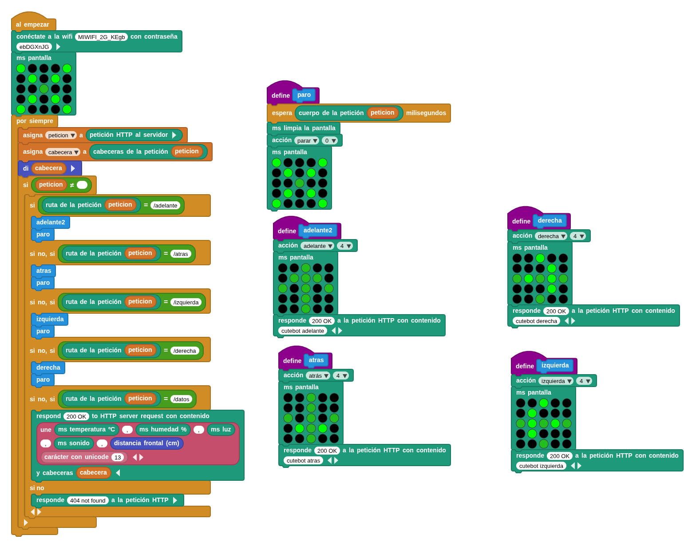

Realiza un servidor web en la placa microSTEAMakers que atiende a peticiones get realizadas por una página web a modo de panel de control. Se puede realizar en modo local (intranet) dónde las peticiones get se realizan a la ip local de la placa, o bién desde cualquier lugar (internet), redireccionando el puerto 80 del router a la ip local de la placa. En este caso las peticiones get se harían a la ip pública del router.
Robot IoT
Control wifi
Aplicación para la placa
Atiende a diferentes peticiones get, en fucnión de las mismas se mueve o emite datos de sensores.

Programa de la placa
Página web de control o panel (dashboard)
Se trata de una web realizada con ayuda de chat GPT a modo de panel de control del robot, se lanzarán peticiones get para moverlo y para pedirle datos de sensores para ser representados o guardados a través de la web. Hay que modificar en la página web la ip en las peticiones por la ip local de la placa o bien la ip pública del router si se ha redirigido el puerto 80 del router a la ip local de la placa.

web de control
Obra publicada con Licencia Creative Commons Reconocimiento Compartir igual 4.0